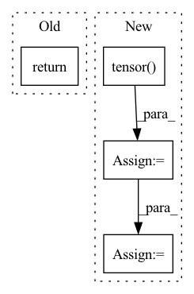

Pattern ID :233
Before Change
super().__init__()
self.shape = shape
def forward(self, input: torch.Tensor, shape):
return torch.reshape(input, self.shape)
After Change
def forward(self, input: torch.Tensor, shape=None):
shape = shape if shape is not None else self.shape
shape = [x if x != 0 else input.size(i) for i, x in enumerate(shape)]
inp_shape = torch.tensor( input.shape)
if self.initial_input_shape is None:
self.initial_input_shape = inp_shape
elif len(shape) == 2 and shape[-1] == -1:
pass
elif torch.equal(self.initial_input_shape, inp_shape):
In pattern: SUPERPATTERN
Frequency: 4
Non-data size: 4
Instances Fragment ID: 870639
Project Name: bbuf/onnx2x
Commit Name: 1c38c809fe2ee466f62fecdf1b9a7c0730b604c8
Time: 2021-02-21
Author: 1182563586@qq.com
File Name: onnx2pytorch/operations/reshape.py
M Class Name: Reshape
N Class Name: Reshape
M Method Name: forward(3)
N Method Name: forward(3)
M Parent Class: nn.Module
N Parent Class: nn.Module
M File Name: onnx2pytorch/operations/reshape.py
N File Name: onnx2pytorch/operations/reshape.py
M Start Line: 10
M End Line: 10
N Start Line: 11
N End Line: 21
Before Change
// reg_heads shape:[[B, 80, 80, 4],[B, 40, 40, 4],[B, 20, 20, 4],[B, 10, 10, 4],[B, 5, 5, 4]]
// center_heads shape:[[B, 80, 80, 1],[B, 40, 40, 1],[B, 20, 20, 1],[B, 10, 10, 1],[B, 5, 5, 1]]
return cls_heads, reg_heads, center_heads
def _fcos(arch, pretrained, progress, **kwargs):After Change
del features
self.fpn_feature_sizes = torch.tensor(
self.fpn_feature_sizes) .to(device)
batch_positions = self.positions(self.batch_size,
self.fpn_feature_sizes)
// if input size:[B,3,640,640] Fragment ID: 870655
Project Name: zgcr/pytorch-imagenet-cifar-coco-voc-training
Commit Name: d271077f312fa0d2bf7456c3b5edc63e49aa3a39
Time: 2020-07-19
Author: zgcr@mail.ustc.edu.cn
File Name: public/detection/models/fcos.py
M Class Name: FCOS
N Class Name: FCOS
M Method Name: forward(2)
N Method Name: forward(2)
M Parent Class: nn.Module
N Parent Class: nn.Module
M File Name: public/detection/models/fcos.py
N File Name: public/detection/models/fcos.py
M Start Line: 109
M End Line: 109
N Start Line: 82
N End Line: 125
Before Change
for layer in self.net:
rel_pos = layer(rel_pos)
return rearrange(rel_pos, "i j h -> h i j")
// helper classes
After Change
def forward(self, *dimensions):
device = self.device
shape = torch.tensor( dimensions, device = device)
rel_pos_shape = 2 * shape - 1
// calculate strides
strides = torch.flip(rel_pos_shape, (0,)).cumprod(dim = -1)
strides = torch.flip(F.pad(strides, (1, -1), value = 1), (0,))
// get all positions and calculate all the relative distances
positions = [torch.arange(d, device = device) for d in dimensions]
grid = torch.stack(torch.meshgrid(*positions, indexing = "ij"), dim = -1)
grid = rearrange(grid, "... c -> (...) c")
rel_dist = rearrange(grid, "i c -> i 1 c") - rearrange(grid, "j c -> 1 j c")
// get all relative positions across all dimensions
rel_positions = [torch.arange(-d + 1, d, device = device) for d in dimensions]
rel_pos_grid = torch.stack(torch.meshgrid(*rel_positions, indexing = "ij"), dim = -1)
rel_pos_grid = rearrange(rel_pos_grid, "... c -> (...) c")
// mlp input
bias = rel_pos_grid.float()
for layer in self.net:
bias = layer(bias)
// convert relative distances to indices of the bias
rel_dist += (shape - 1) // make sure all positive
rel_dist *= strides
rel_dist_indices = rel_dist.sum(dim = -1)
Fragment ID: 870638
Project Name: lucidrains/make-a-video-pytorch
Commit Name: b6e0a17c5488b923d884272f7e46170352b0f0d5
Time: 2023-03-18
Author: lucidrains@gmail.com
File Name: make_a_video_pytorch/make_a_video.py
M Class Name: ContinuousPositionBias
N Class Name: ContinuousPositionBias
M Method Name: forward(1)
N Method Name: forward(1)
M Parent Class: nn.Module
N Parent Class: nn.Module
M File Name: make_a_video_pytorch/make_a_video.py
N File Name: make_a_video_pytorch/make_a_video.py
M Start Line: 110
M End Line: 126
N Start Line: 105
N End Line: 142